Conceito aprovado: “Maior do que se vê”. Movimento aprovado: recuar para revelar. O que muda entre os três tratamentos é o primeiro objeto, a cor, a tipografia, o corte e a entrega para o ato 02.
O casco como parede. Cor natural, luz de dia, título parado enquanto o mundo se move. No fim, o filme encolhe e vira um quadro na página do ato 02.
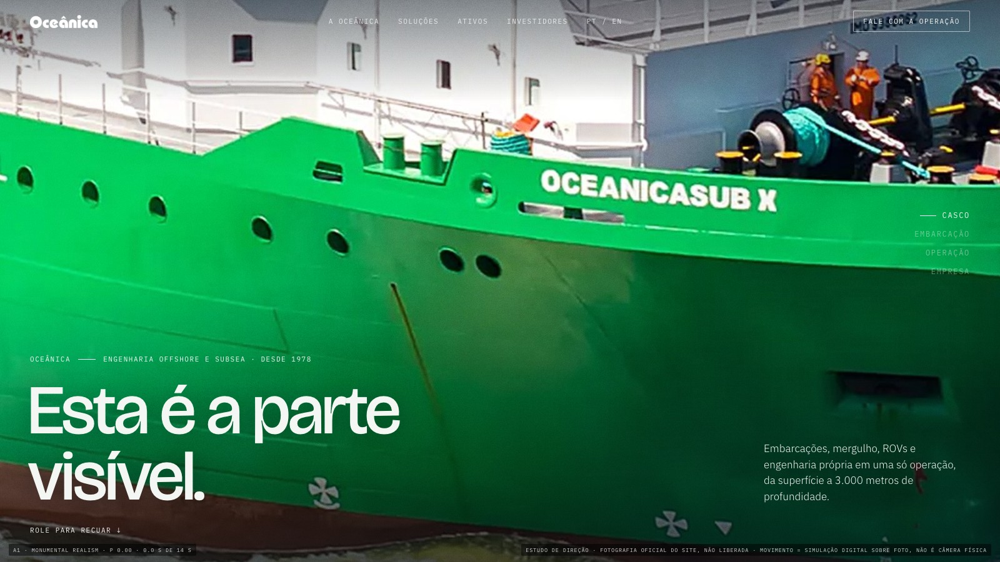
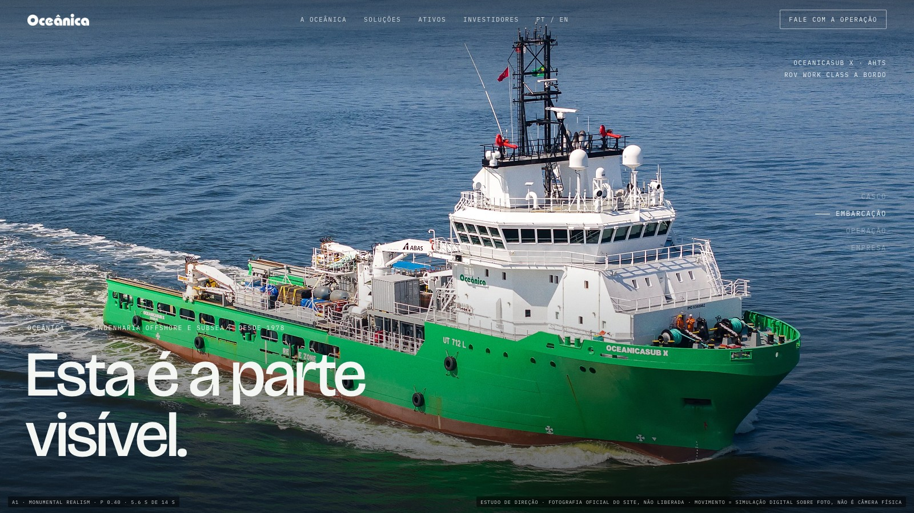
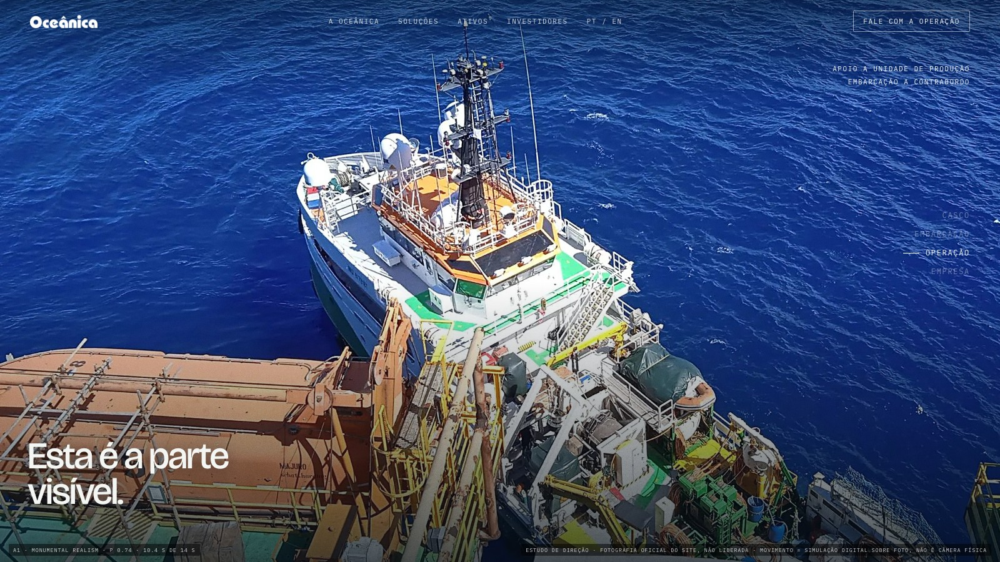
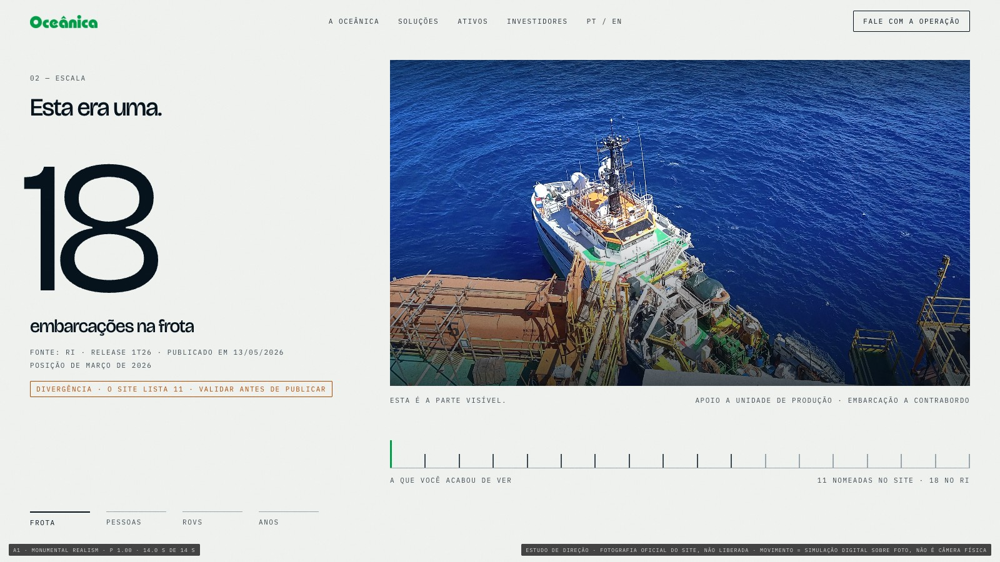
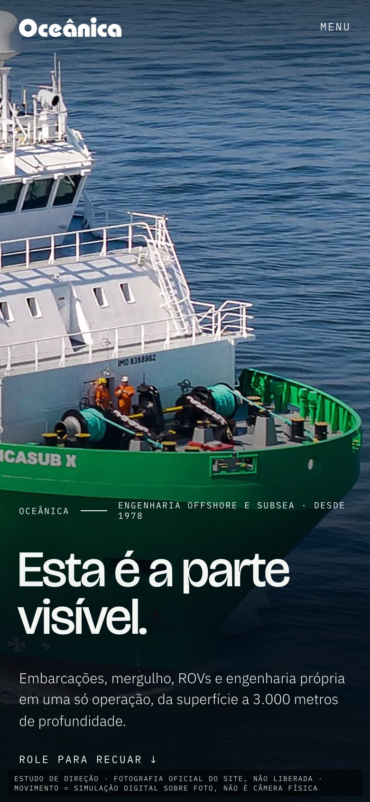
Abre no ROV, com “3000 M” impresso na máquina. O mundo em cinza de aço; só o verde e o amarelo guardam cor. Moldura e carimbo de prancha ficam parados, e cada chamada está presa a um ponto real da imagem.
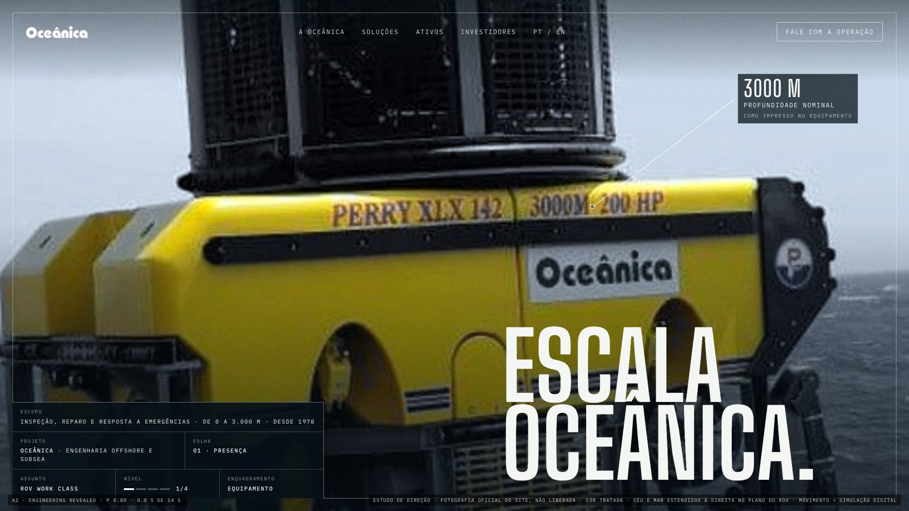
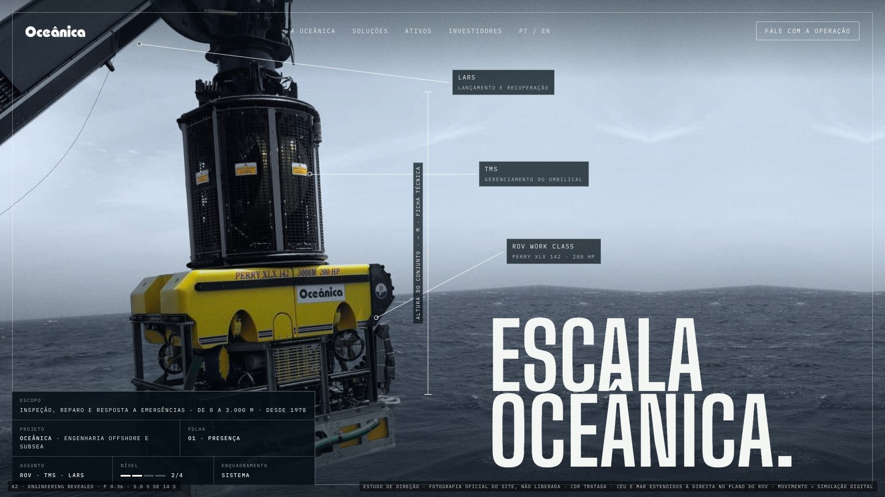
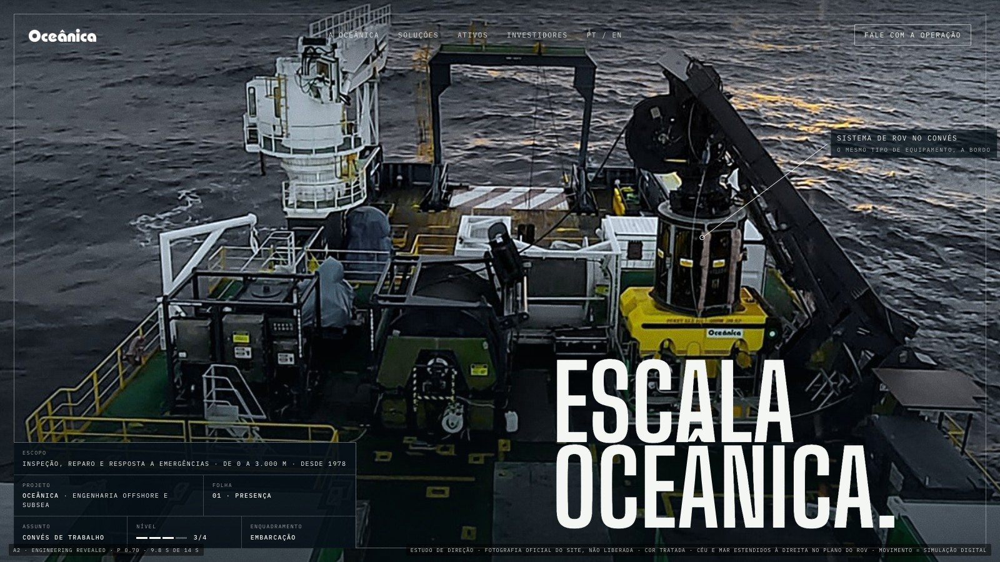
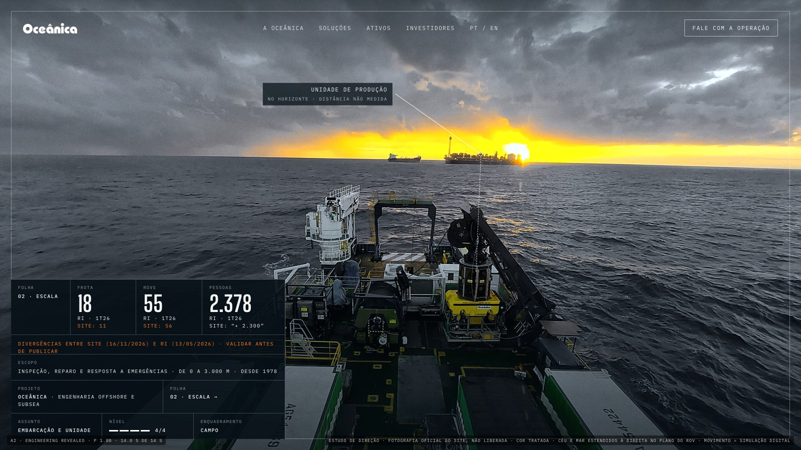
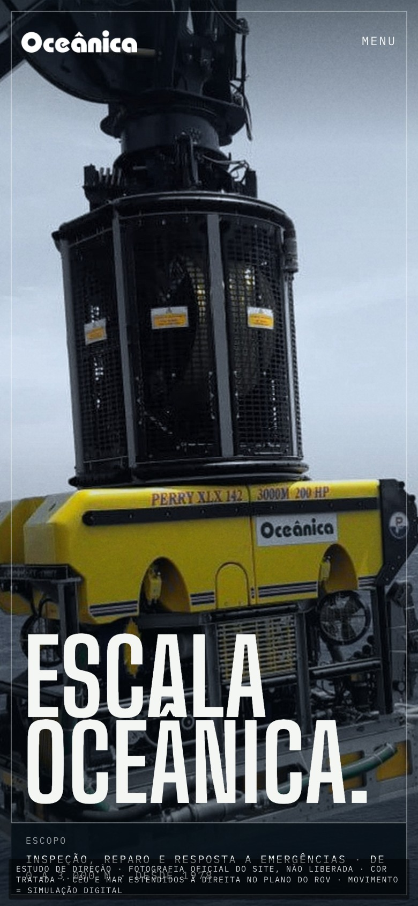
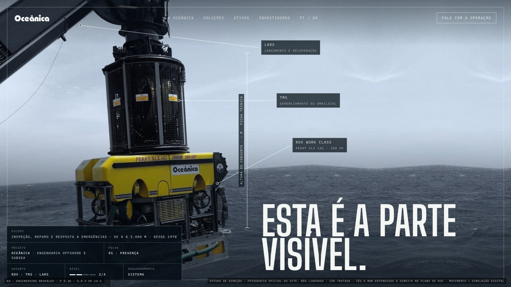
Um ROV suspenso sobre o mar está no último instante em que pode ser visto. Sobre essa imagem, “Esta é a parte visível.” aponta para os 3.000 m sem mostrar o fundo. “Escala oceânica.” passa a ser o título do ato 02.
Começa em um reflexo que não se entende. A câmera sobe, o navio aparece, depois o entorno. Um corte seco leva ao mar aberto, e só então o título entra.
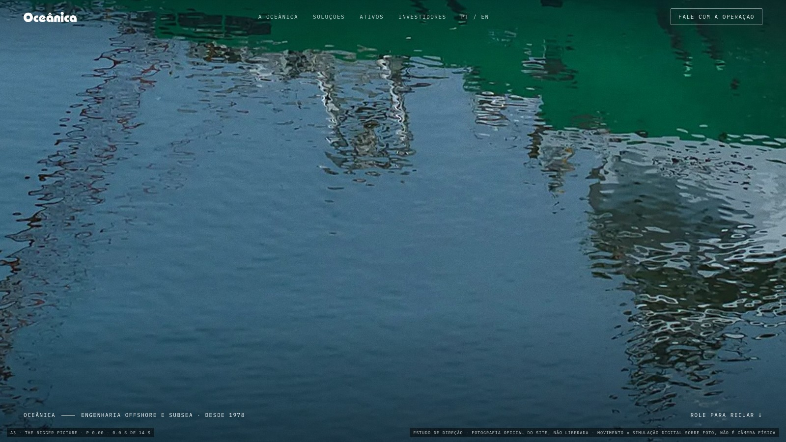
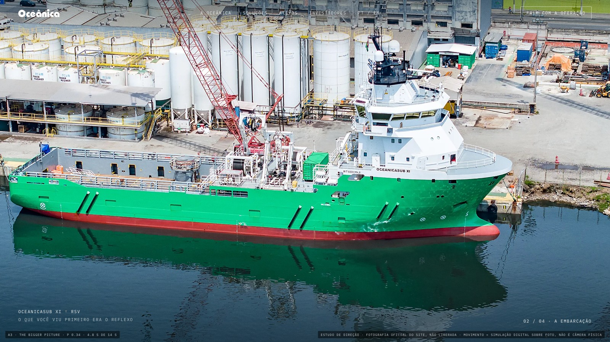
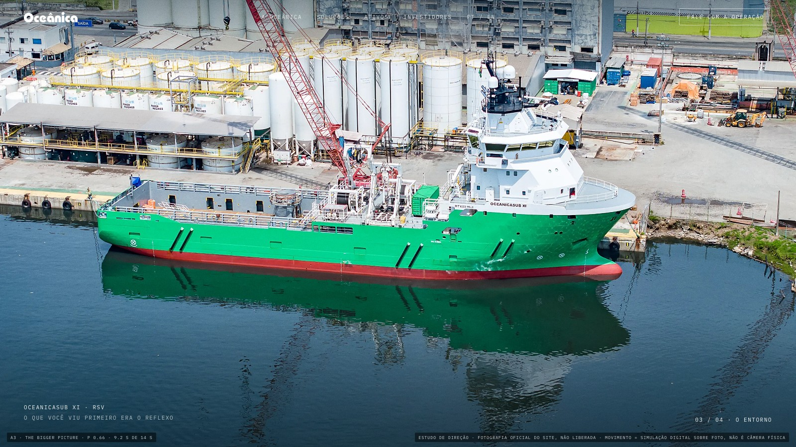
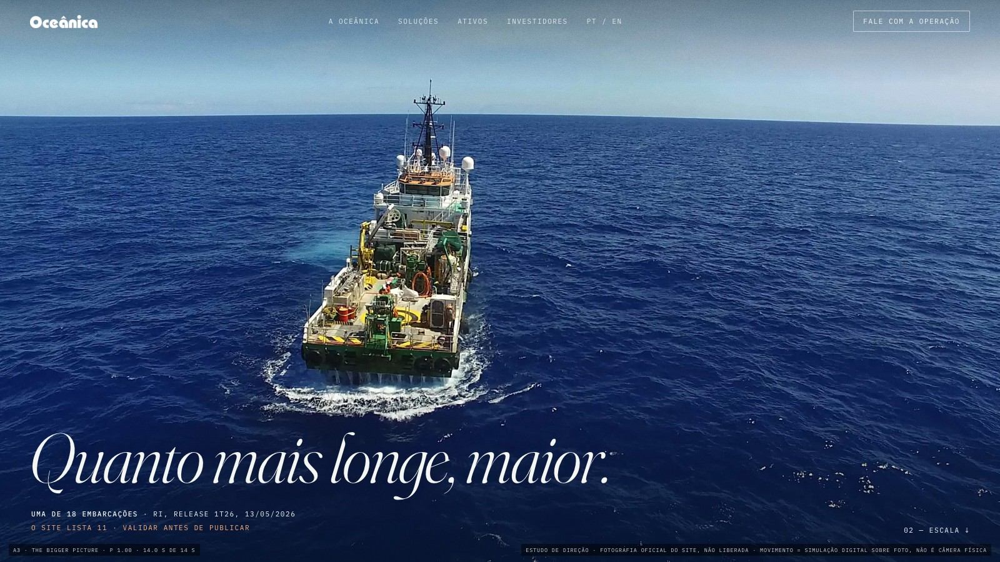
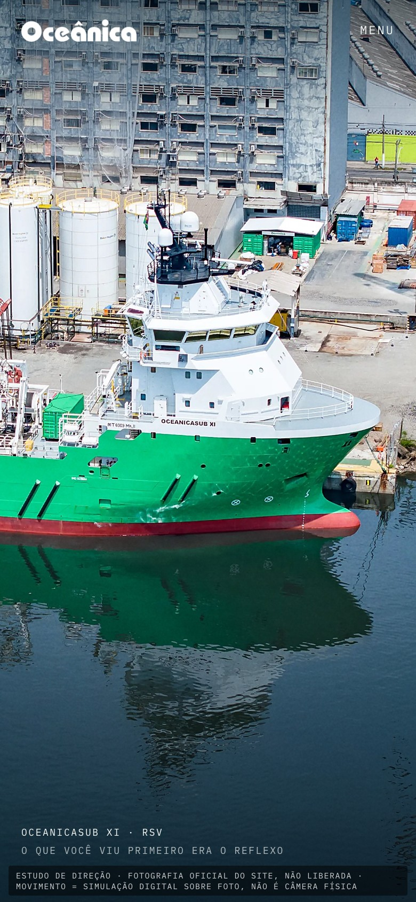
| Critério | A1 | A2 | A3 |
|---|---|---|---|
| Escala | Alta | Média no início, alta no fim | Média |
| Capacidade: a engenharia aparece | Pouco, e só no terceiro quadro | Desde o primeiro quadro | Não |
| Confiança: prova com fonte | Média | Alta | Baixa |
| Reconhecimento da marca | Alto | Alto | Médio |
| Qualidade de imagem hoje | Macro ampliado 2,2 vezes | Macro ampliado 1,7 vez; cor tratada | A melhor: 1,7 vez sobre foto de 2800 px |
| Honestidade do animatic | Zoom crível; o corte finge continuidade | A mais alta: o corte é declarado | Alta, mas a água parada denuncia |
| Entrega para o ato 02 | O filme vira quadro na página | O carimbo vira a folha 02 | Uma linha de texto |
| Pior dependência | Voo junto a uma unidade de produção | Original do lançamento de ROV | Cenário sem relação clara com a operação |
É o único que resolve o problema desta etapa: deixar de parecer empresa de navegação. Entrega escala, capacidade e confiança na ordem pedida, não exige nenhuma cena que não exista e tem a linguagem mais autoral dos três.
O que ele perde: o casco verde quase não aparece, a abertura encosta no erro de usar o ROV como representante único, e a camada gráfica pede disciplina. As correções estão em 05_RECOMMENDATION.md.